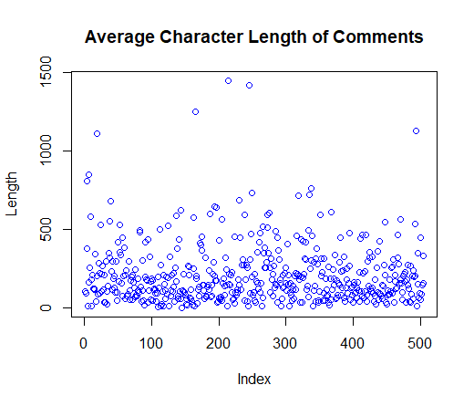
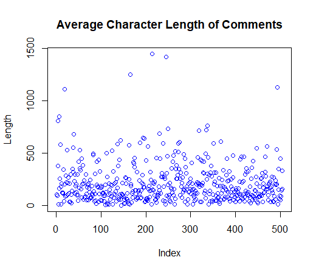

Web Scraping and Word Clouds
What better way to guage the opinion of the general public than trawling through online comments on articles. The visuals below were created by scraping the comments from an article about the proposed capital gains tax in NZ and using R to do some basic text mining and data visualisation.
This wordcloud above shows the overall sentiment of the comments, seperating each word into positive (green) or negative (red) groupings based on the users comments. The size of each word is proportional to the number of times it was mentioned in the comments.
This network shows common word couplings mentioned in the comments. We can see common themes in the text and in our case looks like there are two main groupings (a. tax/payments and b. property). Then there’s a bunch of other smaller groupings - ranging from diverse themes such as ‘child support’, ‘weakest link’, ‘john key’ and my favourite: ‘bloody hard yards’.
If we look at the number of times people have commented, some people have commented over 10 times on this article - these are the true keyboard warriors! I’ve also plotted the character length of each comments to see how many words people are writing. The plot shows that some people are writing comments over 1000 characters long - surely there are better things to do in your spare time!  

Here’s the code used to scrape the comments, wrangle the data and create the visualisations. Because the comments section on the stuff website is actually a javascript object I had to use RSelenium to click the ‘See more comments’ button - otherwise I could only access the first 100 comments.
library(RSelenium)
library(stringr)
library(dplyr)
library(readr)
library(wordcloud)
library(tidytext)
library(reshape2)
#load selenium driver and navigate to the article
driver <- rsDriver()
remDr <- driver[["client"]]
remDr$navigate("https://www.stuff.co.nz/business/money/110775274/capital-gains-tax-dirty-little-secrets-behind-the-cgt")
#expand comments section using css selector
var <- remDr$findElement('css selector','#js-story-comments > div.gig-comments-more')
var$clickElement()
#find the comments element and extract comment text
var <- remDr$findElement('css selector','#js-story-comments')
#allow the page to load and grab the text
Sys.sleep(10)
raw.comments <- var$getElementText()
#wrangle the comments + name from the raw string
names <- str_match_all(raw.comments, 'ago\\n([[:alnum:]]*)\\n')[[1]][,2]
comments <- str_match_all(raw.comments, 'ago\\n([[:alnum:]]*)\\n(.*)')[[1]][,3]
#store in data frame
comments.df <- data.frame(names,comments)
comments.df$comments <- as.character(comments.df$comments)
comments.df$names <- as.character(comments.df$names)
#exploratory data analysis - could go into more detail here but will save that for a rainy day
summary(as.data.frame(comments.df$names))
plot(nchar(as.character(comments.df$comments)),main="Average Character Length of Comments",ylab="Length",col=60)
#word cloud - seperate the tokens, remove stop words
#grab the sentiment score and group according to pos/neg
set.seed(101)
comments.df %>%
unnest_tokens(word, comments) %>%
anti_join(stop_words) %>%
inner_join(get_sentiments("bing")) %>%
count(word, sentiment, sort=TRUE) %>%
acast(word~sentiment, value.var="n", fill=0) %>%
comparison.cloud(rot.per=.2, colors = c("tomato", "springgreen4"),
max.words=200,title.size = 0.5,scale=c(5,.5))
## network analysis
# here we are looking at 'ngrams' - an n-gram is a contiguous sequence of n items from a given sample of text or speech.
# the code below creates a nice network visual for 2 word sequences
test_bigram <- comments.df %>%
unnest_tokens(bigram, comments, token='ngrams', n=2)
test_bigram %>%
count(bigram, sort=TRUE)
library(tidyr)
bigrams_separated <- test_bigram %>%
separate(bigram, c("word1", "word2"), sep=" ")
bigrams_filtered <- bigrams_separated %>%
filter(!word1 %in% stop_words$word) %>%
filter(!word2 %in% stop_words$word)
bigrams_counts <- bigrams_filtered %>%
count(word1, word2, sort=TRUE)
bigrams_united <- bigrams_filtered %>%
unite(bigram, word1, word2, sep=" ")
#bigram relationships
library(igraph)
bigram_graph <- bigrams_counts %>%
filter(n>1) %>%
graph_from_data_frame()
bigram_graph
library(ggraph)
set.seed(2017)
a <- grid::arrow(type="closed", length=unit(.05, "inches")
)
ggraph(bigram_graph, layout="fr") +
geom_edge_link(show.legend=FALSE,
arrow=a) +
geom_node_point(size=5, color="light blue") +
geom_node_text(aes(label=name), vjust=1, hjust=1) + theme_void()